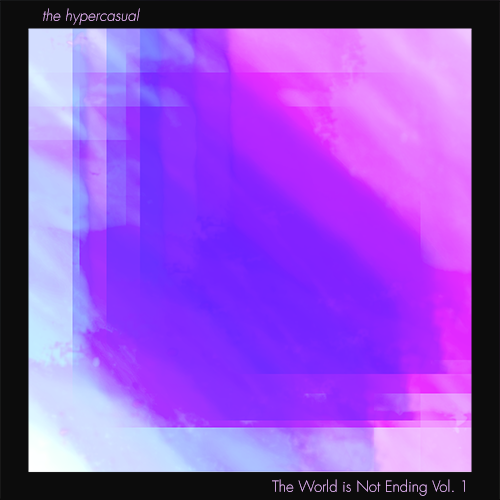

MUSIC
LoFi Hip Hop

The World is Not Ending
Vol. 1
The first installment in a collection of Lo-Fi beats
Featured Tracks
Even Though You're Gone
All We Knew
Forever & Ever
Overview
The World is Not Ending Vol. 1 is my first foray into the popular Lo-Fi genre and is the result of much analysis of Lo-Fi instrumentation, arrangement, production techniques, and overall feel. To be released in August 2020, it is a twenty-minute long collection of instrumental beats designed to be enjoyed while studying, working, or relaxing.
Concept and Inspiration
I first heard the Lo-Fi genre a few years ago through a popular channel and music label called Chillhop Records.
The sound encompassed many things that I enjoy about music, including jazz influences, infectious grooves, and
simple but effective hooks. I've also had a long-time fascination with music that is intended to relax the
listener, or to serve some purpose other than strictly entertainment. So in late 2019 I decided to try my hand at
my own Lo-Fi tracks.
To learn about the genre, I of course listened to many of the current popular Lo-Fi producers, as well as some
jazz and funk greats such as Chick Corea. His sizzling electric piano sound that he used during his Return to
Forever era really struck me, and it ended up becoming a prominent sound on my own recording.
Writing and Production
When writing the parts I tried to keep the production as minimal as possible. In fact, this is probably just an
evidence of my exploration of a minimal aesthetic across all my creative works. The goal was to create music that
would only slightly catch the listener's attention-- not to distract or be listened to "actively." I programmed
short, slightly repetitive beats with a light melodic hook, and I felt that would be enough. The mood or vibe that
the track created was very much the main focus.
As with all my audio production, I employed Ableton Live software and various midi controllers to do the job.
Software plugins included Serum, Sylenth, TAL-UNO, Soundtoys, FabFilter, VinylFX, and Waves.
Release and Marketing Efforts
When it came time to name the work, I decided to send a message, since there were no lyrics with which to do so (I
may sing on future installments, but this doesn't seem to be a popular trend in Lo-Fi). With the world in turmoil
due to COVID and other social injustice issues, I named the album The World is Not Ending,
intended as a hopeful reminder to potential listeners. Even the track titles themselves contain a cryptic message
if one reads them in succession: